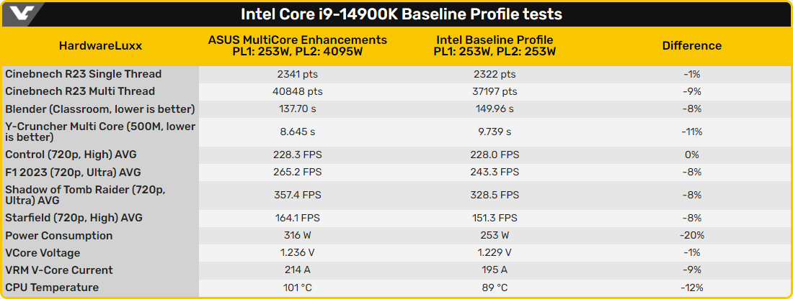

Минулого тижня ASUS випустила нові прошивки UEFI для материнських плат LGA1700, основним нововведенням яких стала опція Intel Baseline Profile. Вона дозволяє швидко скинути всі налаштування до рекомендованих Intel, тим самим покращивши стабільність топових процесорів Core 13-/14-го покоління в іграх. Серед іншого ця опція деактивує функцію ASUS Multicore Enhancement, внаслідок чого користувачі можуть зіткнутися з падінням продуктивності.
Власноруч оцінити різницю між Intel Baseline Profile та «автоматичними» поліпшеннями ASUS вирішила редакція HardwareLuxx. Закордонні колеги протестували процесор Intel Core i9-14900K на платі ROG Maximus Z790 Apex у двох режимах: з дотриманням усіх обмежень Intel, які встановлює вищезазначена опція, та з використанням функцій материнської плати, спрямованих на підвищення швидкодії.
Як показали випробування, продуктивність Core i9-14900K після активації Intel Baseline Profile може знизитися на 8-9%. Це наочно демонструє, наскільки сильно на продуктивність процесора впливають фірмові функції материнських плат, причому деякі з них можуть бути активні вже «із коробки».
